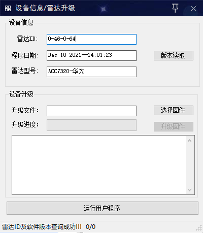
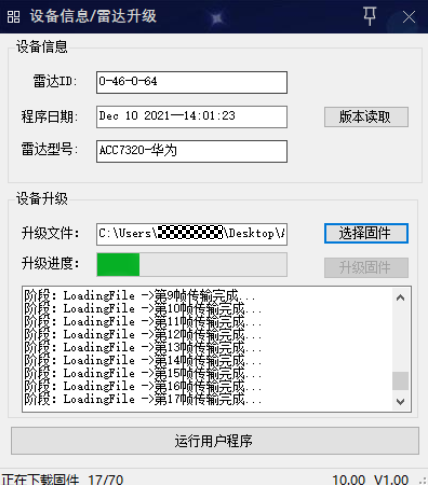
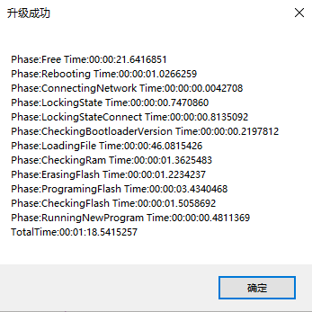
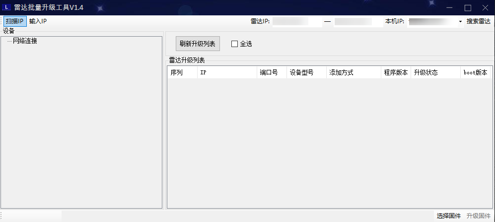
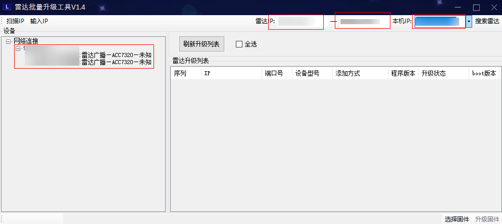
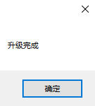

雷达升级
单台雷达ACC7320（HTR）升级
多台雷达ACC7320（HTR）升级
单台雷达ACC7320（HTR）升级
前提条件
已获取
“交通雷达”
软件和雷达升级文件（.ht802文件），并准备好调试笔记本电脑等。。
如果调试电脑和雷达不是网线直连，需要设置二者IP地址为同一网段。
操作步骤
打开调试笔记本电脑及
“交通雷达”
，通过交通雷达软件连接雷达，具体操作请参见
雷达调试
中
1
～
3
。
单击菜单栏中“信息”，弹出如
图1
所示的界面。
图1
信息界面

单击“选择固件”选择已提前获取的升级文件。
单击“升级固件”，开始升级雷达固件，如
图2
所示。
图2
升级固件

等待完成升级后，软件将会弹出升级耗时信息框，如
图3
所示。
图3
升级成功

多台雷达ACC7320（HTR）升级
前提条件
已获取
“雷达批量升级工具V1.4”
和雷达升级文件（.ht802文件），并准备好调试笔记本电脑等。
如果调试电脑和雷达不是网线直连，需要设置二者IP地址为同一网段。
雷达批量升级工具V1.4最多支持同时升级4台设备。
操作步骤
在调试笔记本电脑中打开
“雷达批量升级工具V1.4”
，如
图4
所示。
图4
雷达批量升级工具V1.4主界面

在工具栏雷达IP中输入雷达的IP段，并根据情况填写本机IP。
填写完参数后单击
“搜索雷达”
。操作成功后，在左侧设备列表中会出现相应的雷达，如
图5
所示。
图5
填写参数

点击“刷新升级列表”，勾选要升级的设备，点击“下方选择固件”，选择升级的文件，再点击“升级固件”。
弹出升级结果，如
图6
所示。
图6
升级结果
